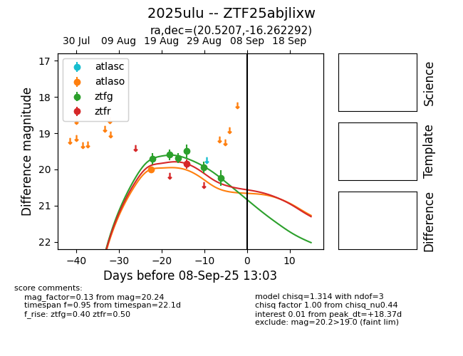

Target 2025ulu at 2025-08-26 11:05, see:
FINK: fink-portal.org/ZTF25abjlixw
Lasair: lasair-ztf.lsst.ac.uk/objects/ZTF25abjlixw
ALeRCE: alerce.online/object/ZTF25abjlixw
TNS: wis-tns.org/object/2025ulu
YSE: ziggy.ucolick.org/yse/transient_detail/2025ulu
alt names
ZTF25abjlixw (ztf,fink)
2025ulu (tns,yse)
coordinates:
equatorial (ra, dec) = (20.5207,-16.26229)
galactic (l, b) = (157.6644,-77.01895)
photometry
last atlaso=20.10, ztfg=19.49, ztfr=19.85
1 atlaso, 4 ztfg, 1 ztfr detections
